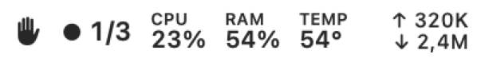

Monitor de sistema e agentes de IA para macOS.
App de barra de menus nativa e discreta. Acompanha CPU, RAM e temperaturas do Apple Silicon, enquanto monitoriza em tempo real o que o Claude Code, Codex, Antigravity, Aider, Goose e Gemini estão a fazer.
Instalado via GitHub CLI (gh), abre de imediato sem avisos de quarentena do Gatekeeper.
Na tua barra de menus

Agentes ativos/total · CPU · RAM · Temperatura máx · Rede upload/download. Rasterizado em CoreText, custo de CPU ~0%.
Instrumentação atenta, exata e discreta.
Criado em Swift 6 puro para macOS 14+ (Sonoma & Sequoia). Inspirado no design dos instrumentos de aviação.

O que torna o AgentStats único
A primeira ferramenta pensada para programadores que trabalham diariamente com agentes de IA autónomos.
Agentes com Estado Real
Lê diretamente os transcripts do Claude Code, bases SQLite do Codex, logs do Antigravity, histórico do Aider, Goose, Cursor Agent e Gemini CLI. Mostra a ferramenta a correr, pensamentos, modelo e subprocessos em tempo real. Pesquisa e filtra sessões por agente, projeto e estado.
Precisa da tua Atenção
Deteta quando um agente bloqueia à espera de aprovação (comandos Bash, edição de ficheiros ou perguntas). Envia também lembretes configuráveis se continuar à espera da tua resposta ou aprovação.
Sensores Apple Silicon
Lê diretamente até 42 sensores térmicos HID do SoC (CPU média/máxima, chip tdev, SSD NAND e bateria) sem depender de ferramentas pesadas ou do Xcode.
Histórico de 24 Horas
Regista médias de 1 em 1 minuto de CPU, RAM, temperatura e atividade dos agentes, além do histórico de estados, duração observada e tokens por sessão.
Teste de Velocidade Cloudflare
Teste manual sob demanda de download, upload e latência integrado no separador de Rede. Medições rigorosas em ~32 MB sem scripts pesados.
Ir para o Agente (Foco Rápido)
Clica num cartão ou numa notificação de conclusão para trazer instantaneamente para a frente a janela onde o agente está a trabalhar (Terminal, VS Code, app ChatGPT, etc.).